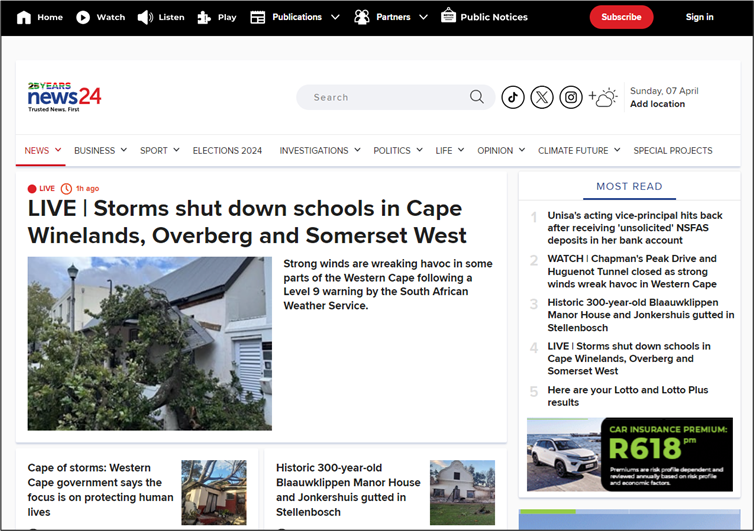
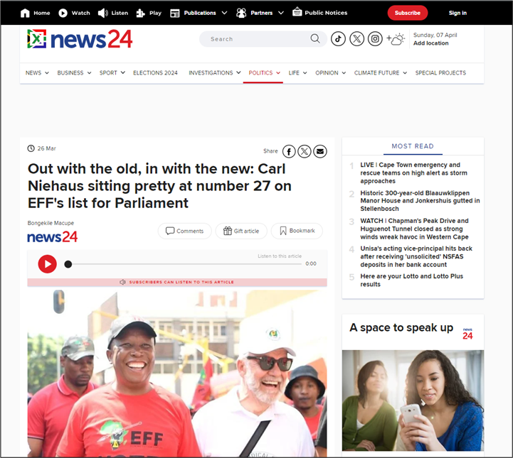

Ethics, UI, UX, and Interaction
News24 is a South African news website that was created in October 1998 (News24, 2019). On the website, users can read the latest news in South Africa and around the world, they can also get information about business ventures, politics, and sports. If they do not feel like reading, users can choose to listen to the news through podcasts or radio shows. News24 also has content exclusive to their subscribers who pay R89 per month to receive a daily newsletter, access to games such as Crosswords and Sudoku, and they can watch live recordings of the news. The target audience for this website is young adults because they are more likely to get their news online and the content and features are suitable to them.
News24 is a modern iteration of traditional news media. Applying Marshall McLuhan's Laws of Media, News24 enhances the way in which people in South Africa receive news or stay informed about the world. It renders newspapers obsolete because people no longer have the need to buy them when they can simply read the news on their mobile devices. News24 retrieves some features of newspapers in that users can do quizzes and Crosswords and they can bookmark their favourite articles which is another version of creating newspaper clippings. Also, when News24 is pushed to its limits, it will revert back to its original characteristics. It will instead be less convenient to use, too expensive, and having constant access to the news might cause information overload (Moulthrop in Wardrip-Fruin & Montfort, 2003, pp.697 –701)
UI and UX Analysis
The image above is a screenshot of News24’s homepage. The page is white and at the top, it has a black navigation menu with white text and icons to symbolise each section. On the right, there is a red “Subscribe” button and “Sign in” hyperlink prompting users to subscribe or to sign in if they already have an account. Below the navigation menu, on the left, is the News24 logo and in the middle is a search bar for users to simply look up any article or subject they want. Next to it are social media icons for TikTok, X, and Instagram and lastly, there is a display for the current date and weather given the user’s location. Below that is another navigation menu with more specific titles such as “Elections 2024” and “Climate Future” and the latter has an arrow to show that when clicked, a dropdown list, with related subjects, will appear. Because this is the first page and sets the tone for the entire website, the homepage has a breaking news story at the top displayed as a large headline and image to draw in readers. The other articles are laid out much smaller beneath it and, on the right, there is a list of the most read articles and an advert.
The image above is a screenshot of an article from the News24 website. It falls under the Politics section on the navigation menu and that is indicated by it being underlined and highlighted in a red font. News24 “[kept] its brand identity consistent across the site” because like the homepage, this page has the same colour scheme as well as a clean layout and easy navigation (Ślusarczyk, 2023). In this image the article’s headline is bold and has the largest text on the page and it is accompanied by a photograph, illustrating what the article is about. The user can listen to an audio recording of the article by pressing the red play button. They can also share a link to the article by pressing the email or social media buttons, they can leave a comment, gift the article to someone else, and bookmark it for when they want to refer back to it.
These features make the website feel more lively and interactive
because it is not just a site to get news but users can also engage with the news and
interact with others about what they read (Ślusarczyk, 2023). In terms of the UI design, the most important part of the page, which is the article, takes up the
most space and the additional information like the ads and the most read list are on the peripheral. The words “Comment”, “Gift article” and “Bookmark” are
encapsulated by an oval shape indicating to the user that they are buttons, and they all have the same colour and font. The “Subscribe” and play buttons are
coloured in red to show that they are related. This is because users can only play a recording of the article once they have subscribed. All this makes the page
cohesive, easy to use and visually appealing. This shows that News24 has a well-designed UI and that means it provides a good user experience. However, it is also
essential to look at how users engage with the site on mobile devices.
The image above is a screenshot of the same article as before but displayed on a mobile device. The text is readable, the buttons are large enough to tap, and the
navigation is smooth and intuitive. It is clear that the makers of this site optimized it because it loads quickly, and the images display correctly. The layout is
pretty much the same as the laptop version as the Subscribe button is still at the top right and the navigation menu is below it with the article taking up most of
the space on the page. Hannah Niebla, a product designer, states in an article, Good UI should be easy to understand, consistent, responsive, accessible, and
offer feedback to the user
(Niebla, 2023). This is exactly what News24 does. It has a consistent colour scheme of red, black, white, and blue in each of its
pages. Its interface is simple, and it has functional buttons and links that display something when clicked. Also, the images have captions and “alt text”, as seen
in the Developer Tools image below, which make them accessible for people using screen readers as well as those with network/connectivity issues.
Ethics of the Interaction Design
Ethics is the study of the concept of morality and what makes certain behaviours or actions right or wrong. Interaction Design is the design of interactive
products and services in which a designer’s focus goes beyond the item in development to include the way users will interact with it
(Interaction Design
Foundation, 2011). When put together, the ethics of interaction design is about considering the moral implications and responsibilities associated with creating
interactive digital products and interfaces. Below will be a discussion of News24’s design choices and how they might affect a user’s mental well-being as well as
whether the design is inclusive, accessible, and respectful of the user’s rights and privacy.
When a user first opens News24, they will be met with a notification to accept cookies, as seen in the image above. Cookies help websites remember information
about [a user’s] visit, which can make it easier to visit the site again and make the site more useful to [them]
(Google, 2009). The notification explains to
users what the cookies are for, and it even includes links to privacy policies and frequently asked questions to inform them on anything they are unsure of. This
is a good practice of ethical UI/UX design because it gets consent from the user to collect their data and it clearly [communicates] how it will be used
(Design, 2023).
News24 has a simple UI design, as seen in the diagram above. Having a simple UI aids in the website being easy to understand and navigable and it also reduces
cognitive load. This is because cluttered interfaces and overly complex interactions can lead to [information] overload and user frustration
(Design, 2023).
This is another example of News24’s good practice of ethical UI/UX design because it is essential for users’ mental well-being to be considered in the creation of
a website.
While on the website, users can do whatever they want. They can choose to press the search bar, click on a section on the navigation menu, read an article and even
subscribe to the website. They are not forced to do anything and that is because News24 gives users autonomy. They empower [users to] have control over their
interactions within a digital interface and they provide users with the freedom to navigate, choose, and customize their experience based on their preferences
(TeamDesignLab, 2024). This user autonomy is coupled with an ethical use of persuasion. The makers of News24 were able to get users to do what they want without
using dark design patterns. This is evident in the placement of the Subscribe button. Because the button is placed at the top right of the page, there is no way
that users will unintentionally click on it. They instead designed it to have a red fill colour and an oval shape symbolising “friendliness” to get users to click
on it on their own. The makers of News24 probably figured that having a bright red button on the corner of a user’s screen will convince them to subscribe rather
than forcing them to do it.
Lastly, and most importantly, for a website to be considered to have ethical interaction design, it must be inclusive and accessible. According to the Bruce Lawson
reading, Many of us just assume that popular services have been checked for accessibility
which, most of the time, is not the case (Lawson, 2019, p.2). An
article from the Design Lab also states that Accessibility in UX design isn't just a nice-to-have; it's a necessity. An ethically sound UX design ensures that
digital products are usable by people with a wide range of abilities, backgrounds, and skill sets
(TeamDesignLab, 2024). The Lawson reading further states that
[the] use of HTML5 landmark regions (main, nav, header, footer, etc.) helped [a screen reader user] form a mental model of the structure of a webpage
and
a sprinkling of ARIA
let them know when a summary ended and an article began (Lawson, 2019, p.3).
News24, as seen in the Developer Tools image, uses ARIA labels within its HTML elements. News24 also uses alt text within its image tags and captions to describe what the image illustrates. As already established, this will aid users who cannot see the image due to disabilities or network/device limitations. The colour scheme for the website is also pretty simple but effective. The colour red lures in the user as seen with the Subscribe and play buttons. The large text shows that the statement is important, and the navigation menus are clear and functional. Because the website was designed with accessibility in the forefront, News24 has opened itself up to a larger audience. People who cannot see, people who are colourblind, those with older devices/network issues and those who are not used to using digital platforms are all catered for. They can engage with the content without being forced to do something or being overloaded by too much information.
Link to a PDF version of the essay
References
- News24. (2019). News24 | South Africa’s leading source of breaking news, opinion and insight. [online] Available at: https://www.news24.com/.
- Wardrip-Fruin, N., Montfort, N. and Moulthrop, S. (2003). The New Media Reader. Cambridge, Mass: MIT Press, pp.691–703. 48.[Introduction] You Say You Want a Revolution? Hypertext and the Laws of Media.
- Ślusarczyk, A. (2023). Inspiring News Website Design Examples That Redefine Journalism. [online] Be Theme Blog. Available at: https://muffingroup.com/blog/news-website-design/#:~:text=A%20news%20website%20needs%20a. [Accessed 26 Mar. 2024].
- Niebla, H. (2023). 10 Examples Of Bad UI Design And How To Fix Them. [online] careerfoundry.com. Available at: https://careerfoundry.com/en/blog/ui-design/common-ui-design-mistakes/. [Accessed 26 Mar. 2024].
- Interaction Design Foundation (2011). What is Interaction Design? [online] The Interaction Design Foundation. Available at: https://www.interaction-design.org/literature/topics/interaction-design.
- Google (2009). How Google uses cookies – Privacy & Terms – Google. [online] Google.com. Available at: https://policies.google.com/technologies/cookies?hl=en-US.
- Design, D. (2023). Ethical Considerations in UI/UX Design: Impact on User Well-Being. [online] Medium. Available at: https://devoq.medium.com/ethical-considerations-in-ui-ux-design-impact-on-user-well-being-4b34eec3a3dd#:~:text=Transparency%20and%20Privacy%3A%20Respecting%20user . [Accessed 26 Mar. 2024].
- TeamDesignLab (2024). Ethical Considerations in UX Design | Designlab. [online] Design Lab. Available at: https://designlab.com/blog/ethical-considerations-in-ux-design. [Accessed 26 Mar. 2024].
- Lawson, B. (2019). How A Screen Reader User Accesses The Web: A Smashing Video. [online] Smashing Magazine. Available at: https://www.smashingmagazine.com/2019/02/accessibility-webinar. [Accessed 26 Mar. 2024].